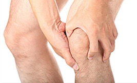

经常跑步的朋友，不可避免的会遇到各式各校的关节损伤；而膝盖则是种种损伤的高发地带。
其中，髂胫束磨擦综合症经常出现于自行车、长跑和竞走运动员，主要原因为髂胫束与股骨外上髁的过度磨擦，导致韧带或滑囊炎症的发生。主要症状是肿胀和疼痛。
因为髂胫束经过股骨，因此易于接触到股骨外上踝。膝关节伸直屈曲时，髂胫束就会于股骨外上踝外滑过，当屈曲约20-30度时，对髂胫束的磨擦最大。
 一本受人尊敬的学术期刊《骨骼放射学》杂志，2008年在欧洲引起轰动。据报道，奥地利多瑙河医院的研究人员对比了1997年维也纳马拉松马拉松选手使用磁共振成像的膝盖影片，和十年后他们再次扫描相同的选手膝盖成像影片，得到惊人的结果：经过10年时间的间隔，马拉松运动员的膝关节没有新的损伤。”罗斯・塔克说，他与南非的生理学家和合作了新书《身体的跑步》。该书的主要观点是最新的运动科学可以帮助您运动得更强，更快。换句话说，我们的身体有足够的适应能力，甚至可以自行治愈关节炎。
记得在医学院学习解剖的时候，对膝关节的描述第一句话是这样说的：膝关节是全身中结构最复杂、最大的关节，也是所受杠杆作用力最强的一个关节。尤其对于我们跑友来说，了解下肢关节的生理结构，对今后的运动是很好的必修课，所以在这里我来简单谈谈膝关节的结构和运动特点。
以下讲述是关于怎样预防和治疗跑步所引起最常见的伤病之一的方法。 有42%的人由于过度使用而严重伤害了膝关节，然而髌骨疼痛症候群，简单来说也就是跑步者膝盖痛，是由于跑步过度而引起最常见的一种病痛。这发生于膝盖骨刺激大腿骨的股骨槽。斯蒂芬・比利巴特，专门研究跑步伤病的体育足病专家，说，给出一个确切的病因是困难的，因为这其中涉及到生物力学的问题，膝盖骨的作用力可能外大于内，它所处股骨槽的位置可能太高，容易造成错位。
给一年级生的答疑系列之：为什么我弯曲膝关节下楼梯时，会发出像咬锅巴的咔嚓声？是骨折声，开裂声，爆破声？医学术语叫捻发音。 “软骨开始老化时，骨头之间的连接组织就会发出这样的声音。”辛辛那提大学副教授、骨外科医生、医学博士詹姆斯埃里克说，在生命的初期，我们的膝盖骨和大腿骨之间的软骨，光滑，无任何声响，但是，随着年龄的增长，它开始老化，最终失去再生能力；30岁之后，大多数人会有一些微弱的捻发音。股四头肌虚弱和髂胫束太紧导致膝盖骨位置不正，加剧磨损和拉伤。”当你的膝盖弧度超过30度时，膝盖就会上移，并嵌入股骨的一个槽中即：二个软骨较弱的骨头发生相互摩擦。迪克瑞说： “不同的压力大小和槽中接触点产生噪音不同。”
膝伤的造成有可能是一两天的事情，但是膝伤的恢复却绝非如此，作为人类进化过程中最为薄弱的关节，它连接的却是身体中最长的骨头、最强大的肌肉，其承受的压力可想而知。要完全恢复，对膝关节而言，决不是一朝一夕的事情，因此，平时做好各种保养工作十分重要，这就像一辆单车或汽车一样，只有经常保养，才能做到正常有效地使用。